节气食单立体材质图标 · 瓷白、玉绿与细金属边。点击图标下载透明WebP。
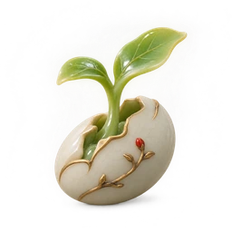
立春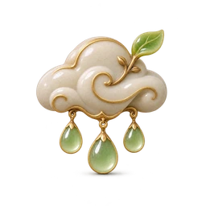
雨水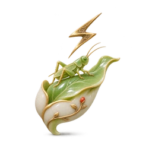
惊蛰春分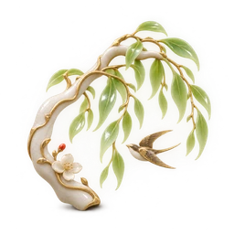
清明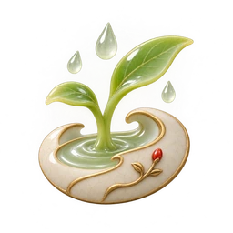
谷雨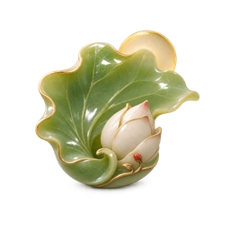
立夏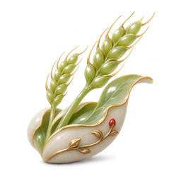
小满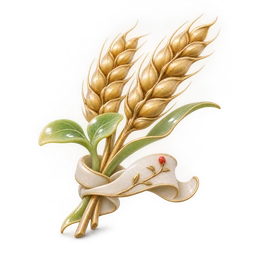
芒种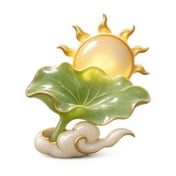
夏至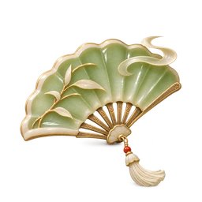
小暑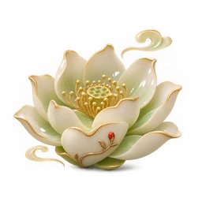
大暑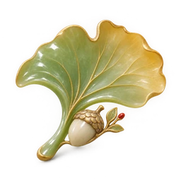
立秋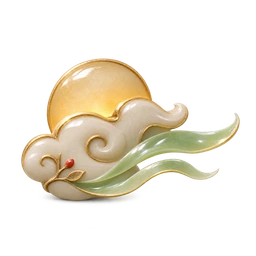
处暑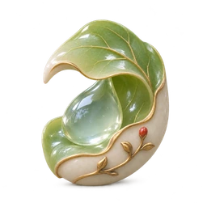
白露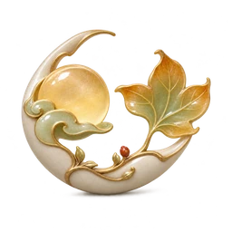
秋分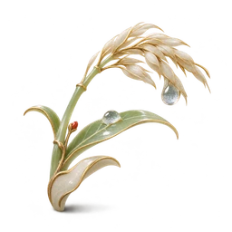
寒露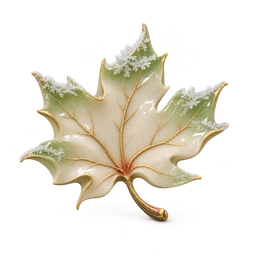
霜降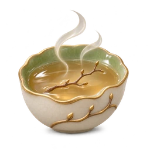
立冬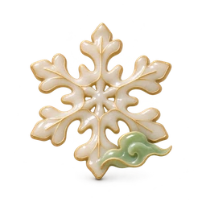
小雪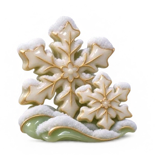
大雪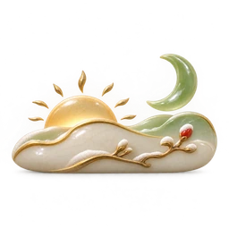
冬至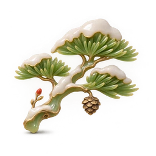
小寒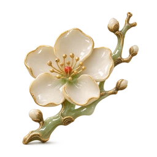
大寒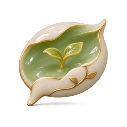
食养问答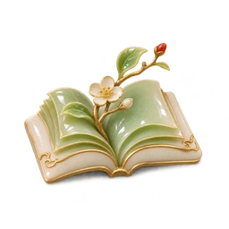
节气百科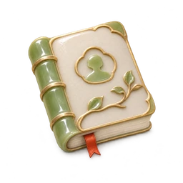
个人中心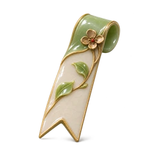
收藏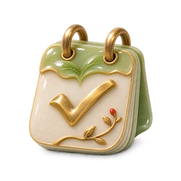
打卡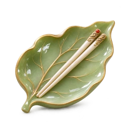
饮食偏好设置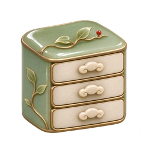
本机数据隐私与说明关于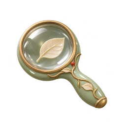
搜索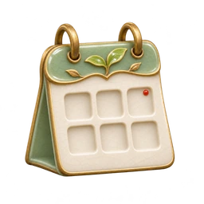
节气切换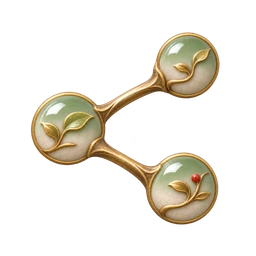
分享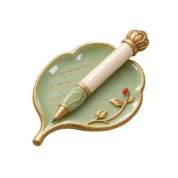
编辑偏好菜谱使用当前内置图像生成工具逐张制作。工具未披露模型版本。导航、功能与节气名称继续以文字标明。